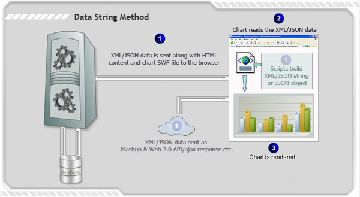

| Data String Method |
|
In this method, the entire chart data (XML or JSON) is provided as a string and embedded into the same page as the chart. When a chart renders or gets updated in a page, it reads the chart data from the string and then renders the chart. The following diagram (along with the steps described below) would help you understand better: 
|
|
Effectively, in this process you need the following to build a chart:
|
Sample Usage of Data String method using FusionCharts JavaScript Class |
<div id="chart1div">
This text is replaced by the chart.
</div>
<script type="text/javascript">
var chart1 = new FusionCharts("Column2D.swf", "ChId1", "600", "400", "0", "1");
chart1.setXMLData("<chart><set label='Data1' value='1' /></chart>");
chart1.render("chart1div");
</script>
FusionCharts JavaScript class provides other functions to achieve the same : setJSONData, setChartData, setDataXML (deprecated) |
Using various server side scripts |
| To ease embedding of charts in your web pages, FusionCharts provides wrapper classes ready for various server-side scripts like ASP, ASP.NET C#, ASP.NET VB.NET, PHP, J2EE, Ruby on Rails and ColdFusion. Moreover, in ASP and PHP, the APIs allow you to connect to arrays and databases and even dynamically build XML data which can directly be provided to chart.
Here, we provide highlights of code snippets that are used in each technology to embed FusionCharts using Data String method. |
| Using ASP |
| Call renderChart("../../FusionCharts/Column3D.swf", "", chartDataAsString, "myFirst", 600, 300, false, false) |
Read more from here on FusionCharts and ASP. For more details read the sections Using with ASP and FusionCharts ASP Class under the section Guide for Web Developers. |
| Using ASP.NET C# |
| FusionCharts.RenderChart("../FusionCharts/Column3D.swf", "", chartDataAsString, "myFirst", "600", "300", false, false); |
|
Read more from here on FusionCharts and ASP.NET C#. For more details read the sections Using with C# (ASP.NET) under Guide for Web Developers. |
| Using ASP.NET VB |
| FusionCharts.RenderChart("../FusionCharts/Column3D.swf", "", chartDataAsString, "myFirst", "600", "300", False, False) |
|
Read more from here on FusionCharts and ASP.NET VB. For more details read the section Using with VB.NET (ASP.NET) under Guide for Web Developers. |
| Using PHP |
| renderChart("../../FusionCharts/Column3D.swf", "", $chartDataAsString, "myFirst", 600, 300, false, false); |
|
Read more from here on FusionCharts and PHP. For more details read Using with PHP and FusionCharts PHP Class sections under Guide for Web Developers. |
| Using J2EE |
| <jsp:include page="../Includes/FusionChartsRenderer.jsp" flush="true"> <jsp:param name="chartSWF" value="../../FusionCharts/Column3D.swf" /> <jsp:param name="strURL" value="" /> <jsp:param name="strXML" value=chartDataAsString /> <jsp:param name="chartId" value="myFirst" /> <jsp:param name="chartWidth" value="600" /> <jsp:param name="chartHeight" value="300" /> <jsp:param name="debugMode" value="false" /> <jsp:param name="registerWithJS" value="false" /> </jsp:include> |
|
Read more from here on FusionCharts and J2EE. For more details read Using with J2EE section under Guide for Web Developers. |
| Using ColdFusion |
| <cfoutput>#renderChart("../../FusionCharts/Column3D.swf", "", chartDataAsString, "myFirst", 600, 300, false, false)#</cfoutput> |
|
Read more from here on FusionCharts and ColdFusion. For more details read Using with ColdFusion section under Guide for Web Developers. |
| Using Ruby on Rails |
| render_chart '/FusionCharts/Column3D.swf', '', chartDataAsString, 'configuredChart', 600, 300, false, false |
|
Read more from here on FusionCharts and RoR. For more details read Using with RoR section under Guide for Web Developers. |